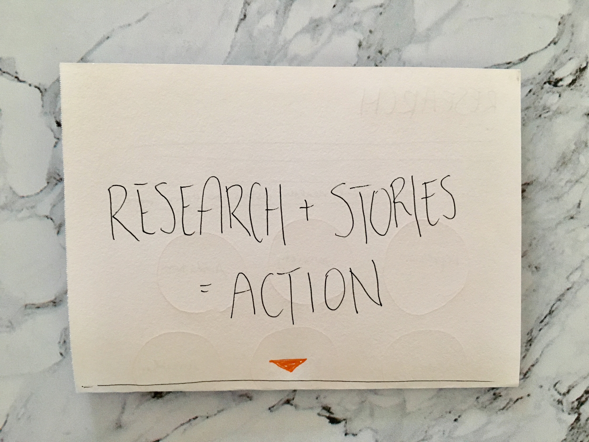

Homepage
My homepage will have the title "Research + Stories = Action" in order to show that change can happen with just a few steps. These words will be clickable and can take you to that direct page, or you can scroll to see the next section.
My homepage will have the title "Research + Stories = Action" in order to show that change can happen with just a few steps. These words will be clickable and can take you to that direct page, or you can scroll to see the next section.

Once you scroll down (or click), you will get to the Research section. Here there will be information about common mental health issues that teenagers face, and you can click on them to learn more. A pop-up will appear and you can exit it by clicking the x at the top. This section will also feature various graphs and charts to help explain the data.
If you keep scrolling, you will get to the Stories section of the site. Here I will feature a variety of young adults and their mental health struggles in order to bring in a face to connect to the issue. Viewers will also have the opportunity to provide their own stories via a form at the bottom of the section.
Action is the last section. It explains steps you can take to make mental health part of the educational curriculum, and provides a form where you can input how you're willing to contribute, whether it is provided in the list or not. At the very bottom, there is a "back to top" button to take you back to the homepage.